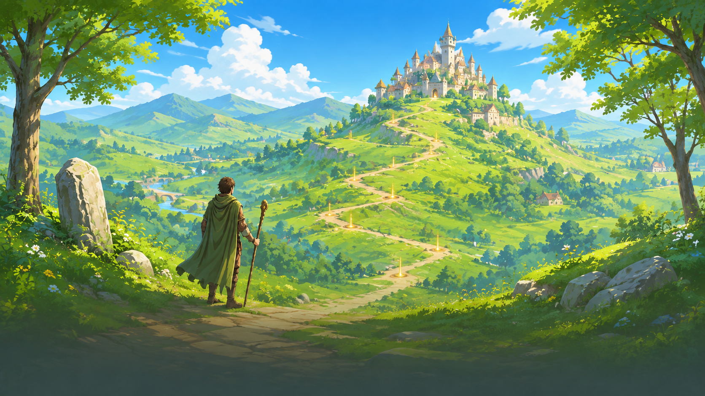

Règles du jeu
Commencer une partie Choisir une aventure, préparer le terrain et comprendre ses objectifs.

Illustration d’accueil du jeu RPG GPS. Les règles de ce thème Le principe du jeu Vous incarnez un héros qui explore des lieux, dirige des troupes et accomplit des objectifs. En GPS, vos déplacements réels permettent de vous rapprocher des lieux et des rencontres. En simulation, vous déplacez le héros sur une carte fictive ; les actions et leurs validations restent les mêmes.
Les objectifs de victoire dépendent du scénario et du mode de partie. Consultez le briefing et le journal : gagner une bataille ne termine pas nécessairement l’aventure.
Créer, rejoindre ou reprendre Jeu rapide prépare une salle avec les réglages proposés. Planifier une partie permet de préparer le terrain, les quêtes et les lieux. Rejoindre utilise le code de l’organisateur. Partie test sert aux essais sur carte fictive. Choisir un joueur ne lance pas automatiquement la partie.
Une reprise conserve les paramètres et la progression de sa sauvegarde. L’organisateur peut jouer avec un héros ou choisir un rôle sans héros prévu par la préparation. Sauvegarder puis quitter et détruire la partie sans sauvegarde ont des conséquences différentes pour tous les participants.
Terrain et QR codes La zone autorisée et ses exclusions délimitent le terrain IRL. Des lieux sont connus dès le départ, d’autres se découvrent ou apparaissent pendant les quêtes. Un même lieu peut servir à plusieurs objectifs.
Un QR code identifie un lieu dans une partie. Le scanner peut le révéler et ouvrir sa fiche, mais ne donne pas une récompense et ne termine pas une quête à lui seul. La proximité reste vérifiée en IRL.
La boucle d’une aventure Lire le briefing, explorer, discuter avec les donneurs de quêtes, transporter des ressources, recruter, améliorer ses lieux et préparer ses combats : ces activités alimentent la progression. Le journal permet de retrouver les prochaines étapes.
Les alliances et la difficulté dépendent des réglages de la partie. Le PvP doit être autorisé : croiser un autre joueur n’est pas à lui seul une permission d’attaque.
Règles détaillées et cas particuliers Thèmes liés Conception, présentation et autres références Version 56 · 2026-10-25 — Guide des règles par thème complété : bâtiments, formations, courrier, surveillance et restrictions du marché
Versions précédentes archivées (55) Version 55 · 2026-10-25 — Refonte du guide joueur par thèmes : règles, conditions, exemples et séparation des outils et notes de développementVersion 54 · 2026-10-24 — Correction du chargement : accès direct aux joueurs sans retour aux étapes de créationVersion 53 · 2026-10-24 — Reconnexion explicite, chargement des parties depuis l accueil et Dashboard en onglets avec gestion des sauvegardesVersion 52 · 2026-10-24 — Distinguer cache et échecs fournisseur et fiabiliser la conservation des cartesVersion 51 · 2026-10-24 — Regrouper toutes les surfaces manquantes dans un seul appel OverpassVersion 50 · 2026-10-24 — Gérer la banque dans le Dashboard et extraire uniquement le contour de la playareaVersion 49 · 2026-10-24 — Préciser la conservation des portions inutilisées dans la banqueVersion 48 · 2026-10-24 — Réutiliser les surfaces communes et télécharger uniquement les portions manquantesVersion 47 · 2026-10-23 — Coupler les cartes sauvegardées à une banque géographique serveur réutilisableVersion 46 · 2026-10-23 — Limiter les extractions OSM, temporiser les échecs et réutiliser les contours équivalentsVersion 45 · 2026-10-22 — Outil de nettoyage ciblé du cache cartographique existantVersion 44 · 2026-10-22 — Bibliothèque privée de cartes dans le sélecteur de zone et nettoyage des paquets inutilisésVersion 43 · 2026-10-21 — Rapprochement en lecture seule des zones sauvegardées et du cache OSMVersion 42 · 2026-10-21 — Article de diagnostic OSM accessible depuis le guide et contrôle du cache persistantVersion 41 · 2026-10-21 — Diagnostic de saturation OSM, test de cache après redémarrage du worker et inspection en lecture seuleVersion 40 · 2026-10-20 — Diagnostic du changement de fond OSM, accès explicite à la carte classique et sélection de personnage communeVersion 39 · 2026-10-20 — Pages individuelles, résumés de lecture et articles de référence expliqués et illustrésVersion 38 · 2026-10-20 — Guide organisé en articles HTML illustrés et liens de référence expliquésVersion 37 · 2026-10-20 — Un article par page, documents de règles expliqués en HTML et illustrations des assets du jeuVersion 36 · 2026-10-20 — Récupération des extractions OSM expirées par secteurs persistants et délais coordonnésVersion 35 · 2026-10-20 — Retour de test chaos : carte continue, progression de marche, sauvegardes, convois et supervision historiqueVersion 34 · 2026-10-19 — Correction de la validation initiale du scénario et des marges système sur téléphoneVersion 33 · 2026-10-18 — Respect des zones de sécurité du téléphone dans les premiers menus et bouton corbeille des joueursVersion 32 · 2026-10-17 — Intégration des neuf armoiries noir et blanc aux fiches QR, sans modification des règlesVersion 31 · 2026-10-16 — Correction de la fixture du rendu en arrière-plan : actualiser les quêtes en préservant les panneaux de gestionVersion 30 · 2026-10-16 — Choix du personnage par les mêmes fiches dans le lobby et la partie testVersion 29 · 2026-10-14 — Déplacement des sommets du contour et des exclusions par glisser-déposerVersion 28 · 2026-10-14 — Parcours guidés, options avancées repliables et fenêtre cartographique plein écranVersion 27 · 2026-10-14 — Isolation des lieux de chaque scénario et placements officiels en simulationVersion 26 · 2026-10-14 — Scénarios de l’éditeur disponibles dans la salle et lancement du monde officielVersion 25 · 2026-10-11 — Placements différés par les joueurs après marche et stock de cases validées par repérageVersion 24 · 2026-10-11 — Accès organisateur dans le menu et fermeture des configurations au retour au jeuVersion 23 · 2026-10-11 — Retrait de sept tests de quêtes historiques obsolètes, démarrage sans ancien camp et mesure correcte des diffusions réseauVersion 22 · 2026-10-11 — Partie rapide : terrain, réglages compacts, joueurs ; scénario facultatif et reprise séparéeVersion 21 · 2026-10-11 — Monde initial de dix lieux et report des missions nécessitant des lieux supplémentairesVersion 20 · 2026-10-11 — Validation progressive de la préparation IRL, date et impression conditionnelles aux QR, repères de lieux sur la carteVersion 19 · 2026-10-11 — Conserver les lieux économiques réutilisés par les quêtes et préciser le principe d’association aux lieux du mondeVersion 18 · 2026-10-11 — Retrait des lieux exclusifs des quêtes désélectionnées et clarification des contraintes de placement ; formats de terrain prévusVersion 17 · 2026-10-11 — Carte : zoom dégagé du menu en portrait et pouvoirs bas en paysageVersion 16 · 2026-10-10 — Bouton de menu : trois barres sans texte visibleVersion 15 · 2026-10-10 — Bouton de scan QR sur la carte au-dessus du centrage joueurVersion 14 · 2026-10-10 — Préparation inspirée du test local, progression cliquable et dimensions du terrainVersion 13 · 2026-10-10 — Correction du DOM simulé des tests du menu et vérification du nettoyage de l’éditeur de terrain, sans changement des règlesVersion 12 · 2026-10-10 — Carte : pouvoirs centrés et recentrage au-dessus de la languette de lieuVersion 11 · 2026-10-10 — Lisibilité et navigation cohérente des écrans de préparationVersion 10 · 2026-10-10 — Lisibilité et navigation cohérente des écrans de préparationVersion 9 · 2026-10-10 — Carte : commandes transparentes, quête serveur visible et languette de lieu sélectionnéVersion 8 · 2026-10-09 — Publication du wiki dans un dépôt GitHub dédié, avec conservation des archivesVersion 7 · 2026-10-09 — Préparation détaillée IRL, rôles organisateur et installation des QR codesVersion 6 · 2026-10-09 — Actualisation du guide et des documents de règles avant publication sur GitHubVersion 5 · 2026-10-09 — Pouvoirs de carte en haut de l’écran pour dégager les lieuxVersion 4 · 2026-10-08 — Nouvelles parties par défaut : 1 joueur et GPS réel, test en simulation expliciteVersion 3 · 2026-10-08 — Menu en jeu : outils en sous-menu et fermeture avec sauvegarde ou destruction serveurVersion 2 · 2026-10-08 — Menu des aventures avant le joueur : jeu rapide, planification, rejoindre et testVersion 1 · 2026-10-06 — Version initiale du wiki